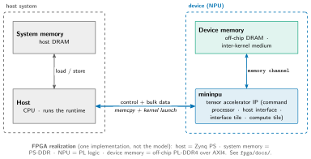
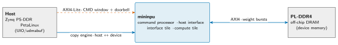
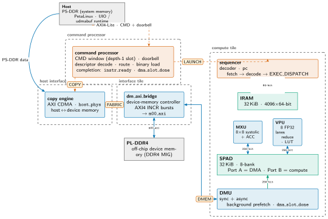
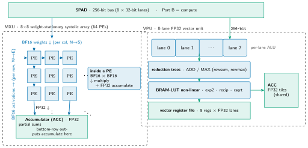

mininpu: Architecture¶
A composable NPU hardware IP. "The device" is a four-unit system: a command processor, a host interface, an interface tile, and a compute tile, built around an on-chip scratchpad execution model. This document describes the architecture top-down: the device in its system, the four units and their interfaces, and the compute engines. The design SSOT is docs/charter.md; constants are owned by mininpu/isa / abi.py / params.py; per-module specifics live in the RTL headers. This document cites those, it does not restate them.
System configuration¶
Slide summary (from the deck build)
- Discrete-accelerator model: a host (+ system memory) drives the NPU (+ device memory).
- Host stages data in system memory, has the device copy it to device memory, launches kernels.
- Device memory is the NPU's working store and inter-kernel medium; the link carries commands + bulk data.
Figure: arch-system

System configuration: a host (with system memory) and mininpu (with device memory) as an IO-attached discrete accelerator. The FPGA mapping (PS-PL) is one implementation, not the model.
mininpu is a discrete accelerator. A host, with its own system memory, programs the NPU; the NPU owns its own device memory. The host stages weights and activations in system memory, issues a memcpy command that the device's own copy engine services (host system memory to device memory), and launches kernels. The NPU computes out of device memory, with DRAM as the inter-kernel medium and no coherent cache across the link. This is the architecture's platform-independent configuration. The FPGA realization (Zynq PS as the host, PS-DDR as system memory, PL logic as the NPU, off-chip PL-DDR4 as device memory over AXI4) is one implementation, detailed in fpga/docs/.
System context¶
Slide summary (from the deck build)
- IO-attached discrete device: host programs it by
memcpy+ kernel launch. - AXI4-Lite command plane: a write-only CMD window (encoded descriptor) + a self-clearing doorbell.
- Device-owned copy engine (AXI CDMA) moves host memory ↔ device memory; AXI4 master to PL-DDR4.
Figure: arch-l1-system

Level 1: the device in its system. One AXI4-Lite command channel (CMD window + doorbell), a device-owned copy engine over the host link, and one device-owned DRAM channel.
The NPU is an IO-attached discrete device. The host (Zynq PS, PetaLinux + a C/C++ runtime over UIO and udmabuf) programs it over an AXI4-Lite command plane: it writes one encoded command descriptor into a small write-only CMD window and rings a self-clearing doorbell; the command processor latches and decodes the window on the doorbell edge. Bulk data does not cross a separate host-DMA stream: a memcpy command is a COPY descriptor that the device's own copy engine (an AXI CDMA) services, moving data host system memory ↔ device memory directly over the AXI fabric (Linux is not in the transfer loop). The NPU owns a second memory channel: an AXI4 master to off-chip DRAM (PL-DDR4) for bulk weight streaming. DRAM is the inter-kernel medium; there is no coherent cache.
The four units¶
Slide summary (from the deck build)
- command processor: decode the CMD descriptor, route LAUNCH to the compute tile / COPY to the host interface, load the binary, signal completion (
command_processor.sv, a persistent device unit). - Host interface: the copy engine (AXI CDMA), host-phys handling (udmabuf); host memory ↔ device memory.
- Interface tile: device-memory controller only (
dm_axi_bridge→m00_axi→ PL-DDR4). - Compute tile:
sequencer+ MXU/VPU/SPAD + a data-moving unit (DMU) (sync + async).
Figure: arch-l2-datapath

Level 2: the four units and their interfaces (LAUNCH / COPY / DMEM / FABRIC). The command processor routes commands; the host interface's copy engine fills device memory; the compute tile's DMU streams device memory ↔ SPAD through the interface tile.
"The npu device" is four units around one uniform inter-unit primitive: a single request carrying an encoded descriptor plus a single completion, with bulk data on AXI4.
- Command processor. The persistent device-side command front-end, factored into
command_processor.sv. It decodes the CMD-window descriptor on the doorbell edge and routes it: a LAUNCH to the compute tile, a COPY to the host interface. It performs the kernel binary load (device memory to tile IRAM), pulsesstart, and signals completion. The host API initiates every command (kernel launches and host↔device memcpys) through the CP in all versions; the CP is a persistent hardware unit, not a per-version throwaway. An on-chip MCU is an orthogonal complexity lever, introduced when FSM control state grows; it is not the v1→v2 defining change. - Host interface. The host-memory connection and the copy engine (an off-the-shelf AXI CDMA in v1). On a COPY it DMAs {
host_phys,dev_addr,len, dir} between PS-DDR and PL-DDR4 over the AXI fabric (udmabuf phys-direct, SMMU bypass). - Interface tile. The device-memory controller only. It serves device memory to both the compute tile and the copy engine:
dm_axi_bridgeconverts the DMA port to AXI4 INCR bursts onm00_axi. In v1 and v2 it is the ZCU102 board's PL-DDR4 interface (DDR4 MIG); the unit is a target-specific shell (the DDR / HBM controller changes per target), not a compute unit. - Compute tile. The portable IP core: the
sequencerfetches 64-bit instructions from IRAM, decodes, and dispatches to the MXU and VPU over the 256-bit SPAD bus; an DMU streams device memory ↔ SPAD (synchronous, and asynchronous with adma_slot_donedependence token for double-buffered prefetch).
The four inter-unit interfaces: LAUNCH command processor ↔ compute tile (start/done + LAUNCH descriptor); COPY command processor ↔ host interface (start/done + COPY descriptor); DMEM compute tile ↔ interface tile (the dm_* load/store req/ack); FABRIC host interface ↔ interface tile (AXI4). The memory tile (an on-chip DRAM cache/staging tier) is [v3]-deferred, so it is absent from the v1 datapath. All on-chip data buses are 256-bit (8 × 32-bit lanes); the instruction bus is 64-bit.
Compute engines¶
Slide summary (from the deck build)
- MXU: 8×8 weight-stationary systolic array; BF16 multiply, FP32 accumulate.
- VPU: 8 FP32 lanes → reduction trees (ADD/MAX) → BRAM-LUT (exp2/recip/rsqrt).
- Both operate on ACC tiles over the 256-bit SPAD bus.
Figure: arch-l3-compute

Level 3: the compute core. MXU: BF16 multiply into FP32 accumulate to ACC. VPU: lanes into reduction trees into BRAM-LUT into the vector register file.
Both engines read and write SPAD over the 256-bit bus (8 lanes of 32-bit). The MXU is an 8×8 weight-stationary systolic array (64 PEs): BF16 activations stream west to east (one per row), BF16 weights stream north to south (one per column), and FP32 partial sums accumulate north to south into the accumulator (ACC). Each PE does one BF16×BF16 multiply into an FP32 add: low-precision multiply, wide accumulate. The VPU is an 8-lane FP32 vector unit: per-lane ALUs feed two reduction trees (ADD/MAX) and BRAM-LUT non-linear units (exp2 / recip / rsqrt), with an 8-entry vector register file; it consumes ACC tiles (softmax, LayerNorm, GELU) and writes back to ACC/VREG.
Precision flow (numerical contract)¶
- Storage
STORAGE_FORMAT = BF16→ PE multiplyMUL_FORMAT = BF16→ACCUM_FORMAT = FP32. - Single v1 numeric story: BF16 storage throughout, FP32 accumulate, hardwired. Owned by
npu/params.py. - Narrow multiply, wide accumulate: avoids K-loop cancellation. Quantization (int4/int8/fp8) is on the extension branch, not main.
Memory hierarchy¶
On-chip storage is true dual-port, single-clock. Capacities/widths are design-time parameters (npu_config_pkg.sv); per-module port/latency specifics live in the RTL headers.
Table: the v1 on-chip memory hierarchy. Capacities/widths are owned by npu_config_pkg.sv; the memory tile is [v3]-deferred and absent here.
| Memory | Capacity | Notes | Source |
|---|---|---|---|
| SPAD | 32 KiB (1024×256-bit) | bf16 operand memory; 256 KiB phys; Port A = DMU, Port B = compute | spad.sv |
| VREG | 32 regs (V0--V31) | fp32 1D register file; 8 lanes each; 5-bit id (0--31) | vec_regfile.sv |
| Device memory | off-chip PL-DDR4 | interface tile: dm_axi_bridge → m00_axi (AXI4) |
dm_axi_bridge.sv |
| IRAM | 32 KiB (4096×64-bit) | instruction memory; Port B = sequencer fetch | npu/ |
Read-latency contract: MEM_LATENCY cycles (currently 2), owned by npu_config_pkg.sv; controller FSMs (e.g. mxu.sv) time reads against it. The memory tile (a 128 KiB on-chip staging/cache tier) is [v3]-deferred (RFC #158) and is not in the v1 hierarchy.
Data plane & concurrency (compute-tile SSOT)¶
Slide summary (from the deck build)
- The compute-tile data plane (3-tier register hierarchy, dedicated fp32 ACC register file, SPAD) and the 3-layer concurrency model are specified in
compute_tile(the compute-tile SSOT).
The compute-tile data plane (3-tier register hierarchy, dedicated fp32 ACC register file, SPAD) and the 3-layer concurrency model are specified in compute_tile (the compute-tile SSOT). This document is the NPU-level view: how the compute tile, interface tile, DMU, host interface, and command plane compose end-to-end, and (at chip level) the [v2] copy ‖ compute concurrency of § command plane.
Command plane¶
Slide summary (from the deck build)
- Host writes one encoded descriptor to the CMD window, rings the self-clearing doorbell.
- The command processor decodes + routes: LAUNCH → compute tile (LAUNCH interface), COPY → host interface (COPY interface).
- Completion =
instr_ready(RTL-verified) +dma_slot_done(async DMA). Map owned bymininpu/abi.py.
The host drives the device over AXI4-Lite: it writes one encoded command descriptor into the write-only CMD window and rings the self-clearing doorbell. The command processor latches and decodes the window on the doorbell edge and routes by kind: a LAUNCH {kbin_addr, kbin_size} to the compute tile over the LAUNCH interface (after loading the kernel binary from device memory into IRAM), a COPY {host_phys, dev_addr, len, dir} to the host interface's copy engine over the COPY interface. The two descriptor kinds subsume the former per-mode command set. Completion is host-pollable: instr_ready (a combinational all-idle flag, also the pollable-full backpressure signal) and dma_slot_done (async DMA). Backpressure is a host-API return value (-EBUSY) after the pollable-full check. The authoritative register map, descriptor layout, and doorbell protocol are owned by mininpu/abi.py (→ regmap_pkg.sv), one deliberate ABI_VERSION 7 → 8 cutover; this document does not restate them. See charter §4 and the control_plane doc for the descriptor encoding; sequencer for the dispatch lifecycle.
RTL pitfall taxonomy¶
Hard-won traps from bring-up and timing closure. Each specific warning lives as an inline comment at its exact code site; the classes:
Table: RTL pitfall classes. Each specific warning lives as an inline comment at its code site.
| Class | Gist |
|---|---|
| FSM state-machine timing | reset/NBA races; keep the explicit else-branch (last-NBA-wins) |
| AXI / protocol sync | drive pointers off the registered handshake |
| BRAM register absorption | DONT_TOUCH stops Vivado folding regs into the BRAM OREG |
| Comb.-cone explosion | split into named always_comb blocks |
| Systolic pipeline timing | row-stagger / valid-delay matching across the PE array |
| BRAM read-latency config | keep sim + synthesized OREG consistent with MEM_LATENCY |
| Fixed- vs floating-point lat. | LATENCY/PE_LATENCY drives FSM wait states |
Generality note. The GPT-2 forward pass (BF16 storage, FP32 accumulate) is the current worked example that exercises this datapath, not the architecture's definition: the four-unit design is a composable, ASIC-bound IP template that generalizes beyond any single model (Qwen / int4-GPTQ lives on a separate extension branch, off main). ZCU102 (FPGA) is a test platform only: no FPGA-specific RTL optimizations enter the IP.